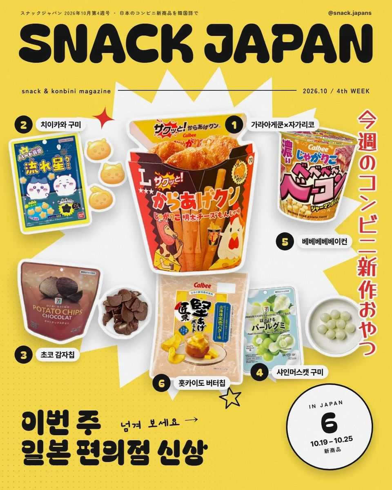
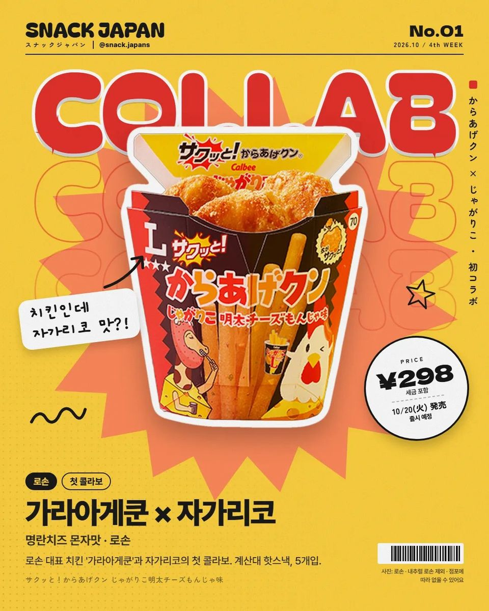
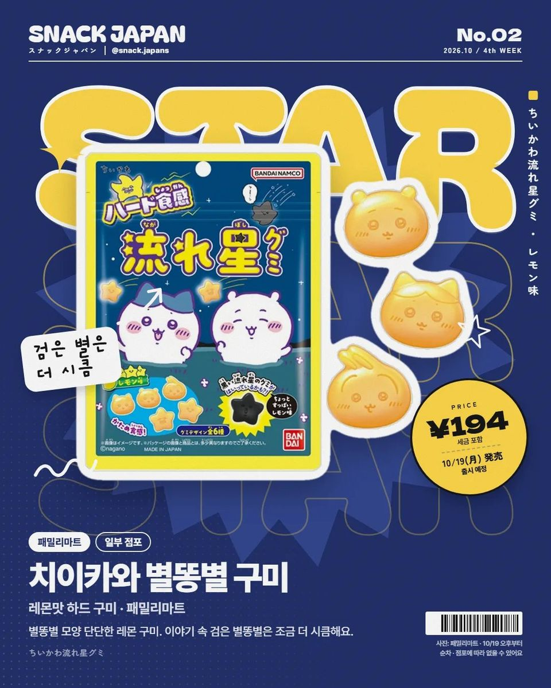
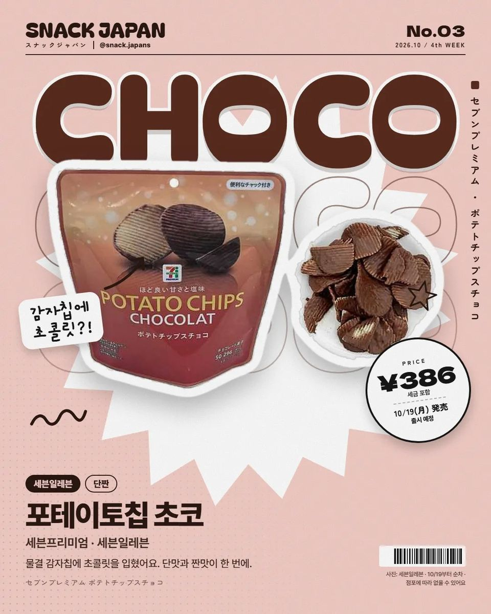
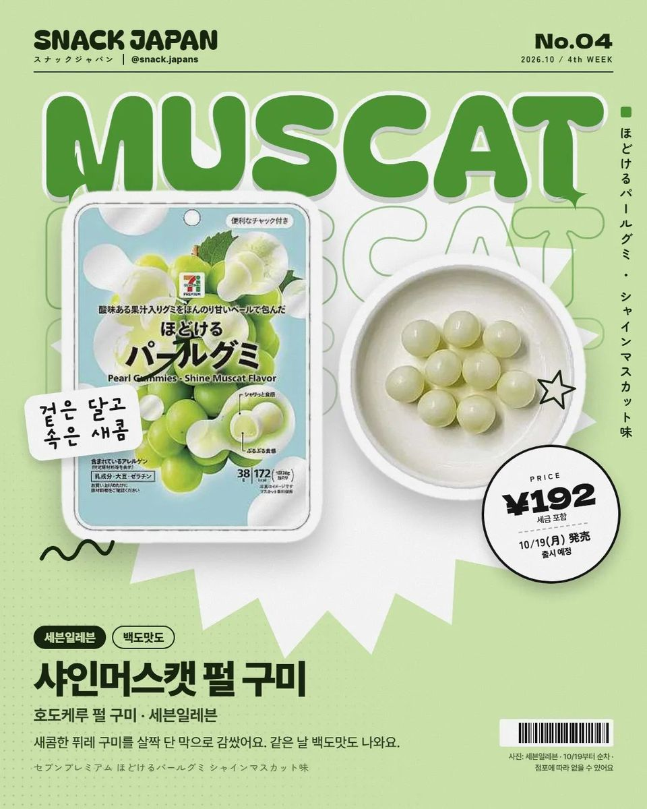
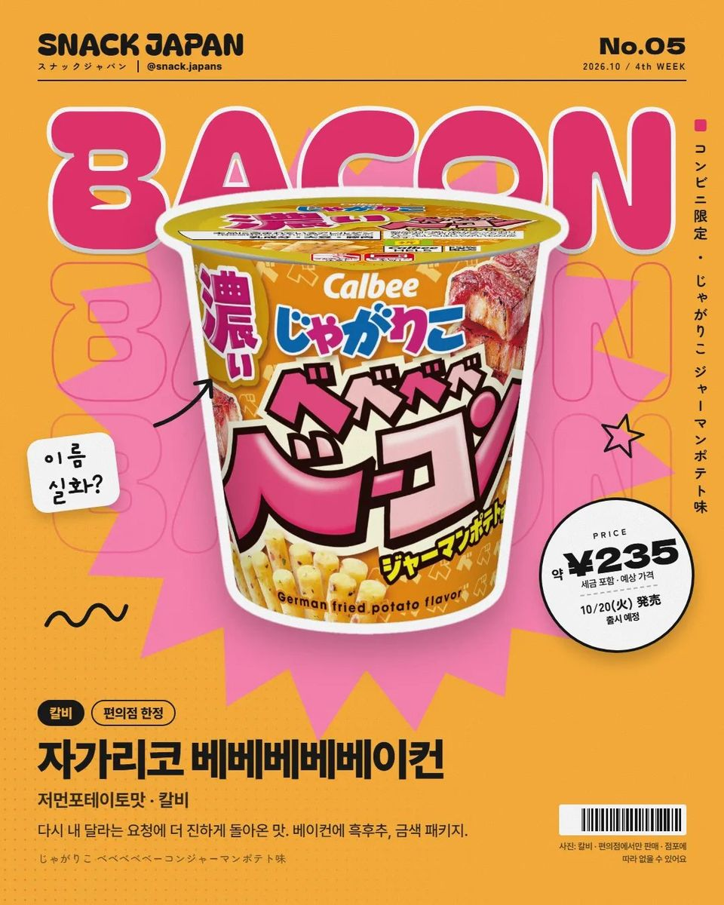
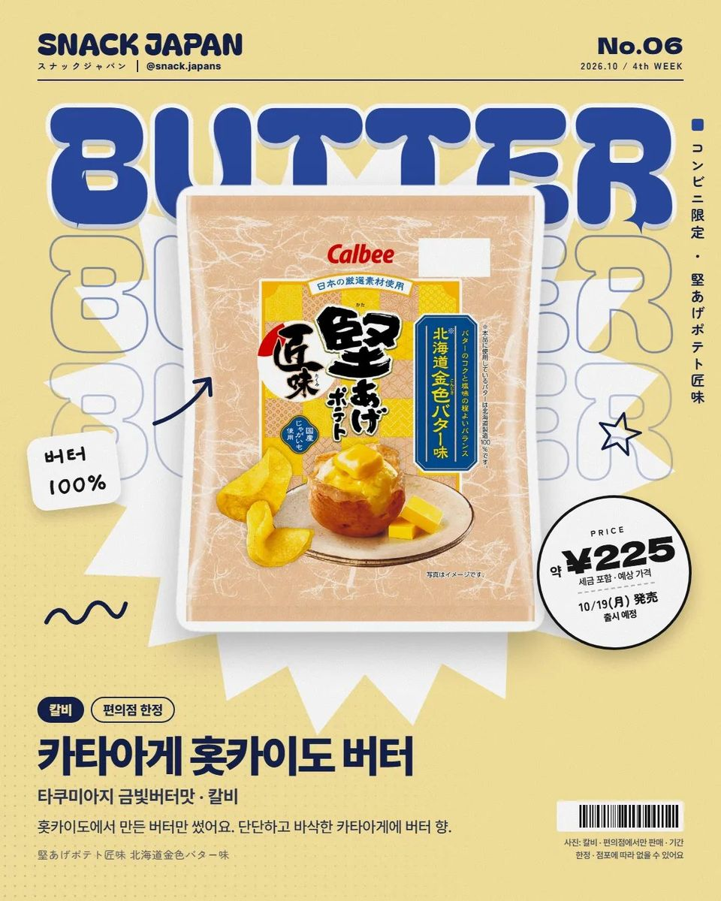

10월 넷째 주 일본 편의점 신상 6가지, 로손 가라아게쿤 자가리코맛 콜라보까지
로손 가라아게쿤 × 자가리코 첫 콜라보부터 치이카와 별똥별 구미, 포테이토칩 초코까지.
다음 주 일본 편의점 신상 미리 봤는데요!
로손 가라아게쿤이 자가리코 맛으로 나온대요 ㅋ 🍗
10월 넷째 주 신상 6가지, 정리해 볼게요!


1. 가라아게쿤 × 자가리코 명란치즈 몬자맛 (로손)
치킨이 과자 맛이라니, 이건 먹어 봐야 알 듯해요.
- 출시: 10월 20일
- 파는 곳: 일본 전국 로손 (내추럴 로손 제외)

2. 치이카와 별똥별 구미 (패밀리마트)
- 출시: 10월 19일 오후부터 (일부 점포)

3. 포테이토칩 초코 (세븐일레븐)
단짠 좋아하면 이거!
- 출시: 10월 19일부터

4. 샤인머스캣 펄 구미 (세븐일레븐)
백도맛도 같이 나와요.
- 출시: 10월 19일부터

5. 자가리코 베베베베베이컨 (칼비)
재출시인데 더 진해졌대요.
- 출시: 10월 20일부터, 편의점 한정

6. 카타아게 홋카이도 버터 (칼비)
- 출시: 10월 19일부터, 편의점 한정
총평
- 참고: 지역마다 안 파는 곳도 있어요
일본 가시면 편의점 신상 코너부터 확인해 보세요!